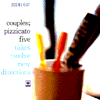
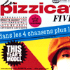
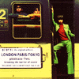
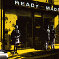
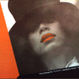
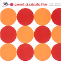
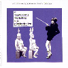

strange music page
japanese pops * * * pizzicato five
#隠しページというか...そんな気は無いんですけど、ちょっと大々的に作るのは恥ずかしいので。どっかのリンクからじゃないと入れない...まあ大した問題じゃないですね。
高校生の頃からpizzicato five大好きです。最近はちょっとなんかアレですけど。特に好きなのはカップルズと月面軟着陸と女性上位時代ですね、なんか昔のばっかですけど。(実は自分の中では"overdose"で完結しちゃってる)
#で、追記。解散しちゃいましたね。あんまり感慨深く無いのは、既に興味無くなってからかな？
|
- pizzicato five (鴨宮 - 佐々木 - 小西 - 高浪)
- pizzicato five (小西 - 高浪 - 田島)
- pizzcato five (小西 - 高浪 - 野宮)
- pizzicato five (小西 - 野宮)
- Portable Rock
- 野宮真貴
- 高浪敬太郎
- Manna
|
#ピチカートファイブのテイチク時代、最初の2枚のEPのCD復刻。表記が"PIZZICATO V"ってのが笑っちゃいます、コンバトラーVみたい。
えーと近所の中古屋さんで安く買いました、昔の昔のピチカートです。
なんだかちょっと昔に思い描いてたよーなハッピーな感じの音です、今聴くと笑っちゃうよな中途半端なアレンジも有りますけど、妙な居心地の良さを感じました。(最近のはとても出来はイイと思うんですけど、妙に居心地悪いみたいです)
やっぱり佐々木麻美子は大好きです(2000.10.17)
Audorey Hepburn Complex
- The Audrey Hepburn Complex
- The 59th Street Bridge Song
- Let's Go Away For A While
in Action
- Action Painting
- Boy Meets Girl
produced by 細野晴臣
- 佐々木麻美子
- 高浪慶太郎
- 鴨宮諒
- 小西康陽
- 鈴木惣一郎 (ukulele on "Audorey Hepburn Complex")(percussions on "in Action" 1.)
- 細野晴臣 (bass on "in Action" 1.)
TEICHIKU: TECN-22333/22334 (1995.11.22)
#佐々木麻美子さん時代のピチカートです。意外とハマります、派手さは無いですが、非常にセンスがよいです。普段ヘンな音楽ばかり聴いてるので余計ハマりました。
(んで上のが買ったとき書いたヤツです)そう、ホントにはまります。いまだに繰り返して聴いてますこのアルバム。最近のアルバム(playboy & playgirlとHAPPY END OF THE WORLD)はほとんど聴いてないんですけど、これは繰り返し聴いてます。

- マジカル・コネクション
- サマータイム・サマータイム
- 皆笑った
- 連載小説
- アパートの鍵
- そして今でも
- 七時のニュース
- おかしな恋人・その他の恋人
- 憂鬱天国
- パーティ・ジョーク
- 眠そうな二人
- いつもさようなら
- 佐々木麻美子
- 小西康陽
- 鴨宮諒
- 高浪慶太郎
- 宮田繁男
- 中原信雄
- 細野晴臣
- 数原晋
- 渡辺等
- 鶴来正基
- 島健
- 金山功
- 斎藤誠
- 河合マイケル
- 小池修
CBS/SONY RECORDS: 32DH-637 (1987)
- 惑星 (planets)
- 誘惑について (temptation talk)
- 聖三角形 (holy triangle)
- ワールド・スタンダード
- カップルズ
- 日曜日の印象 (sunday impressions)
- 水泳 (the swim)
- セヴンティーン
- これは恋ではない (this can't love)
- 神の御業 (the work of god)
- 高浪敬太郎
- 田島貴男
- 小西康陽
- 渡辺等 (bass on on 1.5.7.8.10.)
- 宮田繁男 (drums)
- 中山努 (keyboards)
- 斉藤誠 (guitars)
- 大儀見元 (percussions on 1.6.)
- 金山功 (vibraphone on 3.4.6.7.10.)
- 河合ペドロ (percussion on 1.6.)
- ヤン富田 (steelpan on 4.)
- 八木のぶお (harmonica on 3.)
- 金子飛鳥strings (strings)
- 越美晴 (chorus on 3.4.9.10.)
SONY MUSIC ENTERTAINMENT: SRCL-3374
- オードリィ・ヘプバーンの休日 (Holiday for Audrey.H)
- イントロダクション"ジェイムスボンドとベトナム" (introduction: J.B and Vietonahm)
- 新ベリッシマ (Bellissima '90)
- 恋のテレビジョン・エイジ (T.V.A.G.)
- リップサービス (Lip Service)
「女王陛下のエロチカ大作戦」からの抜粋
- a.スパイ対スパイ (Spy v.s. Spy)
- b.スウェーデン娘
- c.自白剤
- d.陽動作戦 (Feint Operation)
- トップシークレット (Top Secrets)
- バナナの皮 (Bananas)
- トップ40 (Top 40)
- ホームシック・ブルース (Homesick blues)
- 衛生中継 (Satellite hour)
- 遠い天国 (You'll never get to heaven)
- 女王陛下よ永遠なれ (God Save the Queen)
- 夜をぶっとばせ (Let's spend the night together)
- 田島貴男
- 高浪慶太郎
- 小西康陽
- 宮田繁男 (drums)
- 渡辺等 (bass,fretless guitars)
- 沖山優司 (bass)
- 中原信雄 (bass)
- 中山努 (keyboards)
- 島健 (keyboards)
- 鈴木智文 (guitars)
- 村松邦男 (guitars)
- 徳武弘文 (guitars)
- 田島貴男 (guitars)
- ひらがくらよしえ (percussions)
- 八木のぶ夫 (harmonica)
- 丸尾めぐみ (accordion)
- Jake H.Conception (tenor sax,flute,piccolo)
- 坂元俊介 (manupilation)
- 花田裕之 (guitars)
- 数原晋 (flugel horn,trumpet)
- 市原康 (drums)
- 河合マイケル (percussions)
- 野宮真貴 (chorus)
- 越美晴 (chorus)
- 金山功 (vibraphone,xylophone,glocken,timpani)
- 西山健治 (trombone)
- 佐々木麻美子 (voice)
#1990年発売、ソニーレコードからの最後のCD。何でも入れてしまえの非常にテンションの高いアルバムと思います。
70分近く、雑多な要素や曲や曲じゃ無いモノやお喋りなどをぶち込んで、飽きずに聴けるってのは奇跡的かも。グループとしてすら成立してなさそーな状況だからこそこんなのが作れたのかも...この後コロンビアに移って野宮さんをメインに据えてからは、とてもとてもメジャーになって行きます。この頃は一部のマニアにしか受けてなかったよーだけど。
「皆笑った」「夜をぶっとばせ」とか個人的にもずーっと好きでいる曲が有ります、だけど一番好きなのは最後のインストの「カップルズ」だったりもしてますけど。
CD再発の時に奥田民生さんと変なヒップホップやってる「これは恋ではない」がカットされたみたいです。
- パーティ・ジョーク
- 新ベリッシマ
- 誘惑について
- 衛星中継
- 皆笑った
- 指切り
- ちょっと出ようよ
- ちょっと出ようよ reprise
- セックス・マシーン
- リップ・サービス
- ボーイ・ミーツ・ガール
- 眠そうな二人
- 衛星中継
- 惑星
- ワールド・スタンダード
- Top 40
- intermission
- 水泳
boogaloo in action
- アロハ・オエ・ブルース
- これは恋ではない
- 夜をぶっとばせ
- 女王陛下よ永遠なれ
- カップルズ
- 高浪敬太郎
- 田島貴男
- 小西康陽
- 宮田繁男 (drums,percussions)
- 中山努 (keyboards)
- 河合マイケル (percussions)
- 野宮真貴 (vocals)
- 斎藤誠
- 金山功
- 渡辺等
- ひらがくらよしえ
- 笹路正徳
- 数原晋
- 河東伸夫
- 金子グループ
- Jake H.Conception
- 伊集加代子
- 和田夏代子
- 市川秀男
- 越美晴
- 八木のぶお
- 松永孝義
- 宮崎泉
- 岡田陽介
- 沖山優司
- 戸川京子
- ナポレオン山岸
- 奥田民生
- 佐々木麻美子
SONY RECORDS: SRCL-3376
#なんだか浅野ゆうこが出てた昔のTVドラマのサントラ。ちょっと見たような気もするけど良く覚えてないです。
たしか友達から貰ったんだったと思いますけど、pizzicatoというか高浪さんの製作のサントラですね。ちょっと懐かしいや。でも特にこれといって言うこと無し。
- あひるの散歩道 (duck walk, dack soup)
- 職員室のバービー人形 (teacher's pet)
- purple suede shoes
- 6月2日の天気雨 (sunshine,lollipops and rainbow)
- memories of schooldays
- 校庭の椰子の木 (mambo schoolyard)
- midnight shuffle
- 6月2日のムード (mood for a rainy day)
- 大人のチャチャチャ (adult oriented cha-cha)
- マット・ディロンになりたい (I'll see ya guys on saturady night,right?)
- プールサイドの課外授業 (poolside lesson)
- バービー人形の休日 (something for miss model girl)
- memories of schooldays (reprise)
- 校庭の宇宙人 (spaceman on the schoolyard)
- 高浪敬太郎
- 野宮真貴
- 小西康陽
- 寺谷誠一 (drums)
- 沖山優司 (bass)
- 鈴木バカボン (bass)
- 中原信雄 (bass)
- 斉藤誠 (guitars)
- 矢板順一 (percussions)
- フェビアン・レザ・パネ (keyboards)
- 細海魚 (keyboards)
- 鈴木智文 (guitars)
- NOHITO (keyboards)
- 木村誠 (percussions)
- 八木のぶお (harmonica)
- 金山功 (vibraphone)
- 坂元俊介 (manipulation)
- 小林靖宏 (accordion)
- 上柴はじめ (whistle)
- Jake H.Conception (sax,flute)
- 佐藤野百合グループ (strings)
NIPPON COLOMBIA/SEVEN GODS: COCA-7558 (1991.5.21)

- introduction
- ブリジット・バルドー T.N.T.
- 女性上位時代 #1
- 大人になりましょう
- ラヴソング・ラヴソング
- 高浪敬太郎
- 野宮真貴
- 小西康陽
- 坂元俊介
- 鈴木バカボン
- 数原晋
- Jake H.Conception
- 金城寛文
- 清岡太郎
NIPPON COLOMBIA/SEVEN GODS: COCA-5132 (1991.6.1)

- the sound spectacular
- ロンドン-パリ
- Tokyo's coolest sound
- 女性上位時代 #2
- 昨日・今日・明日
- サンキュー (WORLD PEACE NOW MIX)
- 高浪敬太郎
- 野宮真貴
- 小西康陽
- 窪田晴男 (guitars)
- 宮崎泉 (switchboard)
- 朝本浩文 (keyboards)
- 星野節子 (vocals)
- サリー久保田 (chorus)
- 加藤ひさし (chorus)
- 小林靖宏 (accordion)
- 斎藤誠 (acoustic guitars)
- 中西俊博 (violin)
- 鳴島英治 (percussions)
NIPPON COLOMBIA/SEVEN GODS: COCA-5133 (1991.7.1)
#えーと持ってなかった野宮真貴加入直後のEPです。やっぱこの時期が一番(自分にとっては)ピチカートらしいですね。なんか初々しい感じの野宮さんがかわいいですし。
閉店直前のCD屋さんで、\1300×0.6で780円でした。(1999.10.25)

- 結婚のすべて
- ジンクス
- 女性上位時代 #3
- ヴァカンス
- ～朗読: 沼田元気
- 空飛ぶ理化教室
- NO.5
- 野宮真貴
- 高浪敬太郎
- 小西康陽
- 河合マイケル (percussions)
- 菅原裕紀 (percussions)
- 津田篤孝 (bass)
- 中山努 (keyboards)
- 佐藤健 (vibraphone)
NIPPON COLOMBIA/SEVEN GODS: COCA-5134 (1991.8.1)
#このCDは良く覚えてます。高校か中学くらいの時に深夜の音楽番組で野宮さん加入直後のピチカートを見て、近所のレンタルCD屋さんで借りたモノです。
やっぱり音楽聴きはじめの頃に気に入ったモノはずーっと後々まで影響を及ぼすみたいで。そういう意味でも(個人的な話だけど)重要なアルバム。
オシャレなセンスがどーのこーのはともかくとして、なんていうかこの頃のピチカートの浮ついた感じみたいなのは今聴いてもわくわくしちゃいます。「しりとり」が音楽になってしまうのもそんな勢い故かな？
90年代を代表するCDの1枚かも。

- 女性上位時代 #4
- 私のすべて (I)
- お早よう (ohayo)
- サンキュー
- 大人になりましょう (let's be adult)
- 女性上位時代 #5
- ベイビィ・ラヴ・チャイルド
- トゥイギー・トゥイギー
- トゥイギー対ジェイムスボンド
- 神様がくれたもの (gifted)
- パーティ
- しりとりをする恋人たち
- マーブル・インデックス (marble index)
- きみになりたい (Y.O.U.)
- むずかしい人 (xxxxxxxxman)
- TOKYO'S COOLEST SOUND
- クールの誕生 (birth of cool)
- 女性上位時代 #6
- 野宮真貴
- 高浪敬太郎
- 小西康陽
- 渡辺等 (bass on 2.)
- 河合マイケル (drums on 2.)
- 窪田晴男 (guitars on 4.15.)(voice on 12.)
- Jake H.Conception (sax on 13.15.)
- 中山努 (organ on 8.9.)(keyboards on 15.)
- 朝本浩文 (keyboards on 16.)
- 斉藤誠 (guitars on 16)
- 数原晋 (trumpet on 15.)
- 渡辺満里奈 (chorus on 3.)
- 桜井鉄太郎 (chorus on 3.)
NIPPON COLOMBIA/SEVEN GODS: COCA-7575 (1991.9.1)

- 万事快調 (tout va bien)
- Flower Drum Song
- Catchy
- Telepathy
- ショック療法 (shock treatment)
- CDJ
- パリコレ (KDD)
- Funky Love Child
- Cosmic Blues
- 野宮真貴
- 高浪敬太郎
- 小西康陽
- 坂本俊介
- 岡沢章
- 松田文
- 中山努
#えーと懐かしのウゴウゴルーガのヤツです。まぁ特別なモノは無くて、この頃のピチカートそのままのE.P.です。なんていうか余裕みたいな雰囲気が感じられます。ちょっとお気軽すぎるような気もしますけど("しりとり"とか女性上位時代のバックトラックそのままだし)
ウゴウゴくんとルーガちゃんって今何してるんでしょうね？数年したら「あの人を探せ！」みたいな感じで出てきそうですね。
一応クレジットに高浪さんの名前入ってますけど、このアルバムではもう完全に小西さん一人のピチカートです。

- はじまり
- ボンジュール
- 東京は夜の七時
- ラブラブショー
- しりとりしましょう
- ドレミ
- ミー・ジャパニーズ・ボーイ
- 大人になりましょう
- 野宮真貴
- 小西康陽
- 高浪敬太郎
- 坂元俊介 (equipments,programming)
- 窪田晴男 (guitars)
- 星野節子 (chorus)
- ムーグ山本 (turntables)
- ウゴウゴくん
- ルーガちゃん
- テレビくん
- トマトちゃん
NIPPON COLOMBIA/TRIAD: COCA-11506 (1994.2.10)
#高浪敬太郎も抜けて、とうとう野宮真貴と2人になったpizzicato fiveです。このアルバム珍しく力入っています。なんかpizzicatoには似合わない言葉ですけど、力作。
一曲一曲の良さでは今までで最高かと思います、特に陽の当たる大通りとか。
- OVERTURE
- エアプレイン
- 自由の女神
- レディメイドFM
- ハッピー・サッド
- スーパースター
- if i were a groupie
- ショッピング・バッグ
- 東京は夜の七時
- ヒッピー・デイ
- 世界中でいちばんきれいな女の子
- クエスチョンズ
- 陽の当たる大通り
- 野宮真貴
- 小西康陽
- 小山田圭吾 (guitars on 2.)
- 福富幸宏 (guitars on 2.)
- 高木完 (MC on 3.)
- Agnes Bolly (narration on 5.)
- Gemi Taylor (guitars on 5.10.)
- ブラボー小松 (guitars on 6.)
- 宇野淑子 (narrations on 7.)
- 久米大作 (celeste on 8.)
- 渡辺貴浩 (keyboards on 9.)
- 岡沢章 (bass on 10.)
- 斉藤誠 (backing vocals on 11.)
- 池田聡 (backing vocals on 11.)
- 坂元俊介 (clavinet on 12.)
- 八木のぶお (harmonica on 13.)
- 村田陽一 (trombone on 13.)
- 渡辺等
- 中西康晴
- 有泉一
- 坂井利衣子
- 前田康美
- 川瀬正人
- 山本拓男
- 荒木敏男
- 吉川忠英
NIPPON COLOMBIA/TRIAD: COCA-11999 (1994)
- potpourri
- めざめ (the awakening)
- 世界でいちばんファンキーなバンド
- ジェット機のハウス (flying high)
- romantique 96
- icecream meltin' mellow
- the sound of music
- contact
- 三月生まれ (nata di marzo)
- 秘密の花園 (the secret garden)
- catwalk
- good
- 変奏曲 (good)
- tokyo, mon amour
- 悲しい歌 (triste)
- coda
#2枚同時発売マキシのリミックス集のほう。アルバム全体としてはあんまり面白くないんだけど、久米大作のオルガンの5曲目がとっても良かったです。
- baby portable rock BABY MEXICAN ROCK VERSION
- icecream meltin' mellow MARIN MIX 2
- contact PERCOLATOR MIX
- good SAMOAN ATTORNEY MIX
- tokyo mon amour DISCOTIQUE 96 MIX
- icecream melton' mellow MARIN MIX 1
- 久米大作 (organ on 5.)
- 砂原良徳 (remix on 2.6.)
- Nauga (remix on 4.)
- Gentle People (remix on 3.)
NIPPON COLOMBIA/TRIAD: COCA-13433 (1996.6.21)
- 世界は1分間に45回転で廻っている
- 地球は回るよ
- trailer music
- It's a beautiful day
- 愛のプレリュード
- 愛のテーマ
- my baby portable player sound
- モナムール東京
- 衝突と即興
- PORNO 3003
- ソファのための音楽
- GALAXY ONE
- It's all too beautiful
- アリガト WE LOVE YOU
- 私の夏、人生の夏
- ハッピー・エンディング
NIPPON COLOMIBA: COCA-14242 (1997.6.21)
#いやまぁ、そりゃそれなりなんですけど。いつも通りピチカートだし。
でももうそろそろいいかも、次は買わなそうな気がする。
- 不景気
- ロールスロイス
- インターナショナル・ピチカート・ファイヴ・マンション
- 新しい歌
- ウィークエンド
- 不思議なふたつのキャンドル
- コンチェルト
- きみみたいにきれいの女の子
- プレイボーイ・プレイガール
- 大都会交響楽
- テーブルにひとびんのワイン
- 華麗なる招待
- 美しい星
- 野宮真貴
- 小西康陽
- 荒木敏男
- 有近真澄
- Jake H.Conception
- 藤井珠緒
- 細川俊之
- 池田聡
- 加藤ひさし
- 河合伸哉
- 数原晋
- 金原千恵子
- 河野伸
- 小林正弘
- 窪田晴男
- 久米大作
- 村田陽一
- 村山達哉
- 岡沢章
- 斉藤誠
- 寺谷誠一
- 辻冬樹
- 山本拓夫
- 横山均
- 渡辺等
NIPPON COLOMBIA: COCP-30054 (1998.10.1)
#現pizzicato fiveの野宮真貴さんの昔のバンド、Portable Rockのメジャーデビュー以前のデモテープのCDです。チープでシンプルな曲に初々しい野宮さんのボーカルといった感じのものですが、現在とは全く違った魅力があります。個人的にはPortable RockのCDの中ではベストです。
ちなみに安かったです、3枚で900円コーナーに落ちてましたから。
- ピクニック
- グリーンブックス
- ゴーレムポルカ
- 天体観測
- 冬の葡萄畑
- ミシンで縫おう！
- 自動車レース
- 意地悪電波
- クリケット
- 真珠海岸
- アイドル
- 野宮真貴 (vocals)
- 鈴木智文 (guitars,synthesizers)
- 中原信雄 (bass,synthesizers)
- 鈴木慶一 (chorus on 5.)
- 鈴木さえ子 (drums on 1.2.3.9.)(castanets on 3.)
- 金津ヒロシ (programming on 4.6.8.)
SOLID RECORDS: CDSOL-1019 (1990.9.25)
- CINEMIC LOVE
- 素足の恋人
- アイドル
- Escape From Whisper
- B.B
- Tu Tu
- スパイがいっぱい Everybody is a spy
- Golem Polka
- Kiss The Fish
- 夏の日々
- 春して、恋して、見つめて、キッスして
- 野宮真貴 (vocals)
- 鈴木智文 (gutiars,keyboards)
- 中原信雄 (bass,keyboards)
WAX RECORDS: TKCA-30043
#えーと下北沢レコファンにて\1050だったかな？これだけ持ってなかったんだけど。なんとなく最近見かけなかったんで買っておきました。
今聴くとけっこー恥ずかしいものがありますね、「80年代女性ポップス好きならば～」って感じ。結構これだけで幸せになれたりもするんですけどね。(1999.8.14)
- 憂ウツのHOLD ME
- ダンス・ボランティア
- サヨナラは素直にしましょ
- 電話じゃ駄目なの
- スムース・トーク
- 裸のベイビーフェイス
- 寝てなきゃいけない
- いじめの構造
- キュートな事情
- ペーパームーン
- 野宮真貴 (vocals,chorus)
- 中原信雄 (bass,keyboards)
- 鈴木智文 (guitars,keyboards)
- 宮田繁男 (drums on 10.)
- 門倉聡 (keyboards on 3.10.)
WAX RECORDS: TKCA-30242 (original release 1987)
#ピチカートの野宮真貴さんのすげー昔に出たデビューアルバムです。テクノポップです、ハルメンズとかその辺です。今とのギャップがとても楽しいです、ピコピコ和製テクノポップ。
- 女ともだち
- モータ・ハミング
- フラフープ・ルンバ
- シャンプー
- 原爆ロック
- 船乗りジャンノ
- 17才の口紅
- 恋は水玉
- 美少年
- 絵本の中のクリスマス
- ツイッギー・ツイッギー
- ウサギと私
- ピンクの心
- 野宮真貴 (vocals)
- 鈴木博文 (bass)
- 奈良敏博 (bass)
- 白井良明 (guitars)
- 岡田徹 (keyboards)
- 上野耕路 (keyboards)
- 浜口茂外也 (percussions)
- かしぶち哲郎 (drums,percussions)
- 鈴木さえ子 (drums)
- 武川雅寛 (violin)
- 国吉静治 (flute)
VICTOR MUSICAL INDUSTRIES: VICL-2017
- EVERYBODY IS OUT OF TOWN
- 太陽の破片
- 颱風とミニスカート
- 回転扉
- 1DKの渚
- 飽きずに恋をして
- プールの月をすくえ
- 20%の憂鬱
- 潮騒のスタジアム
- JEALOUS MAN
- 高浪敬太郎
- 鈴木智文 (guitars)
- 松田文 (guitars)
- 中山努 (organ)
- 木幡光邦 (flugelhorn)
- 細海魚 (electric piano)
- 竹上良成 (sax)
- 荒木晋 (bass)
- 坂井利衣子 (backing vocals)
- 前田康美 (backing vocals)
- 新居昭乃 (backing vocals)
NIPPON COLOMBIA/TRIAD: COCA-11871 (1994)
#で、1枚目。ライナーにほとんどクレジット無いので誰が参加してるかわからないんですけど、サウンド的には2枚目とそんなに変わらないです、とにかく甘いポップス。
アイドルとかに曲書いたら面白そうなんだけどなーなんて。よく3枚500円コーナーとかに売ってますけど、そんなに悪くないと思います。しかし1991年に「僕のマシュマロちゃん」ってセンスはアリだったんでしょーか？？
- 海岸ソング
- ムッシュダンダン
- 僕のマシュマロちゃん
- 仲直りしてキスをして
- ロルルーの唄
- ふたつの時代
- シュガー・デイズ
- 甘たるく感傷的な絵
- 口笛マンボ
ALFA RECORDS/ZAZA: ALCA-9154 (1991)
#元ピチカートの鴨宮諒さんとと梶原もと子さんのユニット。(沖山優司さんのとは同名の別バンド...みたい)これは2枚目みたいです。
鴨宮さんって、素朴でイイメロディの曲を書く人と思うんですけど。オシャレ系で売るにはちょっとシンプル過ぎで....梶原さんって他の活動は知らないですけど、ちょっと谷山浩子みたいな声で、"元ピチカート"って考えて聴くとちょっと色気が無さすぎるような気もします。
素朴で淡い感じの曲は、佐々木麻美子さん時代のピチカートを彷彿させますけど、結局あんまり売れなかったみたいです。よく中古屋の"3枚900円コーナー"で見かけます。
鴨宮さんは最近はTVのサントラとかで活躍してるみたいです。
- 青い魚
- 太陽海岸
- 自転車と夏と
- 甘い考え
- in green
- すいれんの花
- 一番好きなもの
- 青い制服の男
- happening
- イヤイヤ
- 青空の向こうへ
- 鴨宮諒
- 梶原もと子
- 近藤研二 (guitars on 1.2.3.7.10.)
- 中山努 (keyboards on 1.4.)
- 鈴木惣一郎 (percussions on 1.3.5.6.7.10.)
- 鶴来正基 (piano on 7.)
- 桑野聖 (strings on 1.6.)
- 村田陽一 (horns on 2.7.)
- 荒木敏郎 (horns on 2.7.)
- 赤城りえ (horns on 2.7.)(flute on 3.)
- 高桑秀世 (horns on 2.7.)
- 三沢またろう (percussions on 2.4.)
- Iizuka Masaaki (guitars on 9.)
- Wada Hiromi (bass on 10.)
- 駒澤裕城 (pedal steel guitar on 11.)
ALFA RECORDS/ZAZA: ALCA-326 (1992)